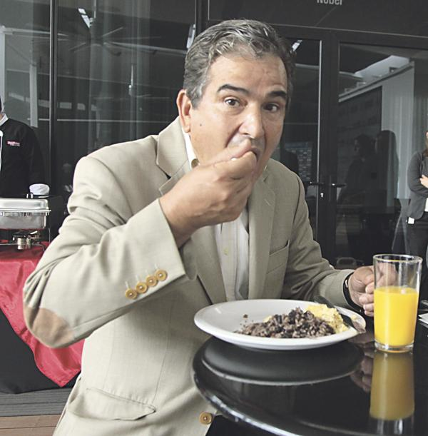

Gallo Pinto

Hola amiwis 0w0
Ingredientes
- 3 cucharadas de aceite de canola
- 1/4 cebolla picada
- 1/2 pimiento verde (o rojo) en cuadraditos
- 3 tazas de frijoles rojos o negros, cocidos
- 3 tazas de arroz blanco, cocido
- Sal
- 2 cucharadas de culantro picado
Instrucciones de preparacion
- Calienta el aceite en una sartén grande y fríe la cebolla y el pimiento hasta que estén suaves.
- Agrega los frijoles, bien escurridos, y fríe de tres a cinco minutos. Agrega un poco del caldo de cocción, si ves que están quedando muy secos.
- Incorpora el arroz y sigue friendo unos tres minutos más agregando un poco más de caldo de frijoles para que el gallo pinto no quede muy seco y finalmente adorna con culantro picado.